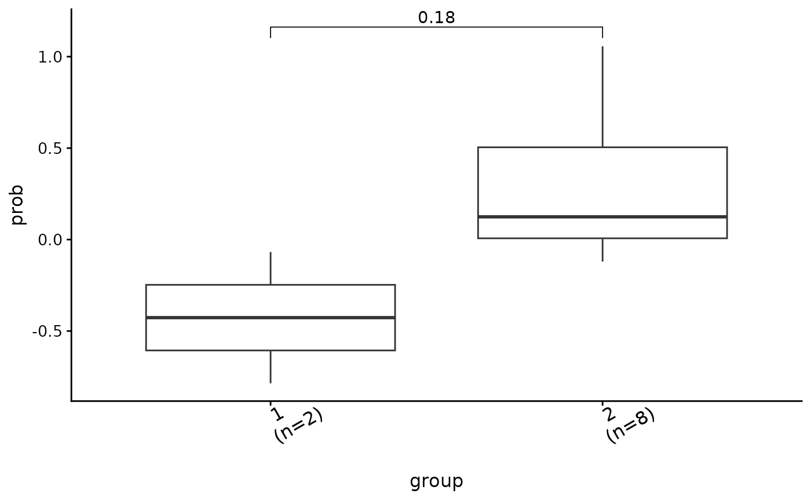
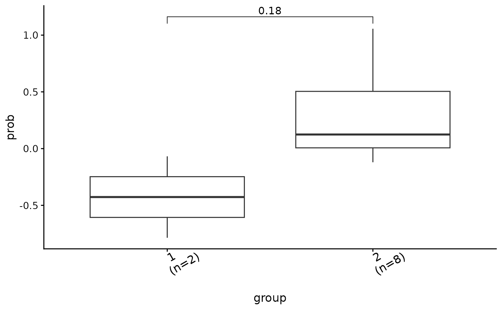
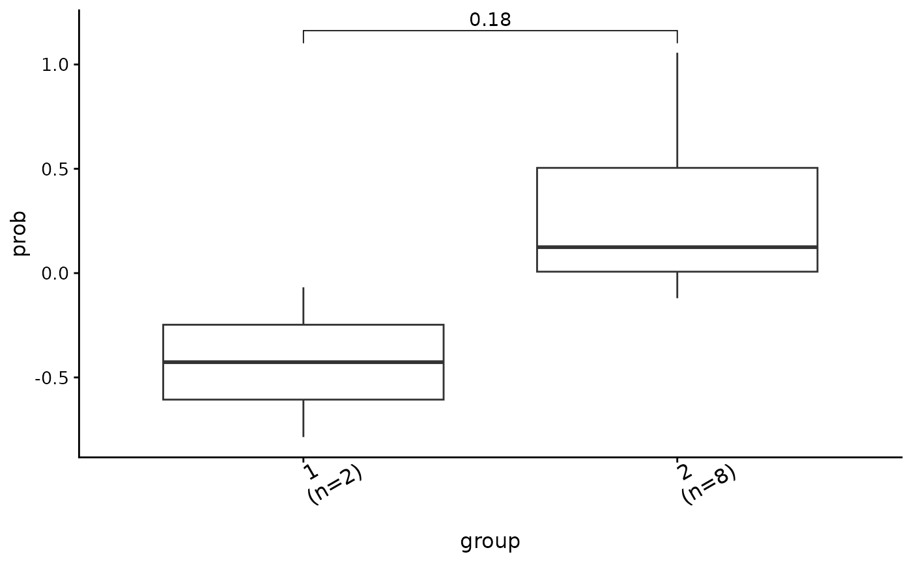
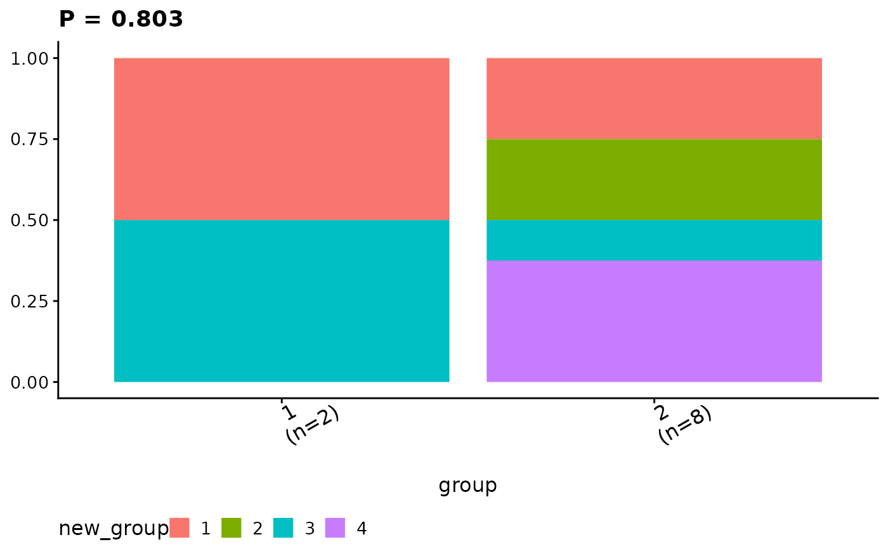

Using result data from get_group_comparison, this function plots
genotypes/phenotypes comparison between signature groups using ggplot2 package and return
a list of ggplot object contains individual and combined plots. The combined
plot is easily saved to local using cowplot::save_plot(). Of note, default fisher
test p values are shown for categorical data and fdr values are shown for
continuous data.
show_group_comparison(
group_comparison,
xlab = "group",
ylab_co = NA,
legend_title_ca = NA,
legend_position_ca = "bottom",
set_ca_sig_yaxis = FALSE,
set_ca_custom_xlab = FALSE,
show_pvalue = TRUE,
ca_p_threshold = 0.01,
method = "wilcox.test",
p.adjust.method = "fdr",
base_size = 12,
font_size_x = 12,
text_angle_x = 30,
text_hjust_x = 0.2,
...
)a list from result of get_group_comparison function.
lab name of x axis for all plots. if it is NA, remove title for x axis.
lab name of y axis for plots of continuous type data. Of note,
this argument should be a character vector has same length as group_comparison,
the location for categorical type data should mark with NA.
legend title for plots of categorical type data.
legend position for plots of categorical type data.
Of note,
this argument should be a character vector has same length as group_comparison,
the location for continuous type data should mark with NA.
if TRUE, use y axis to show signature proportion instead of
variable proportion.
only works when set_ca_sig_yaxis is TRUE. If
TRUE, set x labels using input xlab, otherwise variable names will be used.
if TRUE, show p values.
a p threshold for categorical variables, default is 0.01.
A p value less than 0.01 will be shown as P < 0.01.
a character string indicating which method to be used for comparing means. It can be 't.test', 'wilcox.test' etc..
correction method, default is 'fdr'. Run p.adjust.methods to
see all available options.
overall font size.
font size for x.
text angle for x.
adjust x axis text
other paramters pass to ggpubr::compare_means() or ggpubr::stat_compare_means()
according to the specified method.
a list of ggplot objects.
# \donttest{
load(system.file("extdata", "toy_copynumber_signature_by_W.RData",
package = "sigminer", mustWork = TRUE
))
# Assign samples to clusters
groups <- get_groups(sig, method = "k-means")
#> ℹ [2024-05-12 06:56:44.639711]: Started.
#> ✔ [2024-05-12 06:56:44.641307]: 'Signature' object detected.
#> ℹ [2024-05-12 06:56:44.64568]: Running k-means with 2 clusters...
#> ℹ [2024-05-12 06:56:44.647965]: Generating a table of group and signature contribution (stored in 'map_table' attr):
#> Sig1 Sig2
#> 1 0.2097559 0.7901116
#> 2 0.8964984 0.1035016
#> ℹ [2024-05-12 06:56:44.649405]: Assigning a group to a signature with the maximum fraction...
#> ℹ [2024-05-12 06:56:44.652842]: Summarizing...
#> group #1: 2 samples with Sig2 enriched.
#> group #2: 8 samples with Sig1 enriched.
#> ! [2024-05-12 06:56:44.654656]: The 'enrich_sig' column is set to dominant signature in one group, please check and make it consistent with biological meaning (correct it by hand if necessary).
#> ℹ [2024-05-12 06:56:44.656044]: 0.016 secs elapsed.
set.seed(1234)
groups$prob <- rnorm(10)
groups$new_group <- sample(c("1", "2", "3", "4", NA), size = nrow(groups), replace = TRUE)
# Compare groups (filter NAs for categorical coloumns)
groups.cmp <- get_group_comparison(groups[, -1],
col_group = "group",
cols_to_compare = c("prob", "new_group"),
type = c("co", "ca"), verbose = TRUE
)
#> Treat prob as continuous variable.
#> Treat new_group as categorical variable.
# Compare groups (Set NAs of categorical columns to 'Rest')
groups.cmp2 <- get_group_comparison(groups[, -1],
col_group = "group",
cols_to_compare = c("prob", "new_group"),
type = c("co", "ca"), NAs = "Rest", verbose = TRUE
)
#> Treat prob as continuous variable.
#> Treat new_group as categorical variable.
show_group_comparison(groups.cmp)
#> $ca
#> $ca$new_group
#>
#>
#> $ca_comb
#>
#> $co
#> $co$prob

#>
#>
#> $co_comb

#>
ggcomp <- show_group_comparison(groups.cmp2)
ggcomp$co_comb

ggcomp$ca_comb

# }